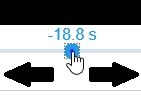

Synchronize Video
Find the jump moment in the data; there is a drop-off in
pressure just after the skier leaves the ground. Use the slider to
adjust the position of the video so that it matches where the skier
left the ground.

Test the synchronization by choosing a spot in the video and
pressing play. If the video does not sync up with the data as expected,
readjust the slider as necessary.